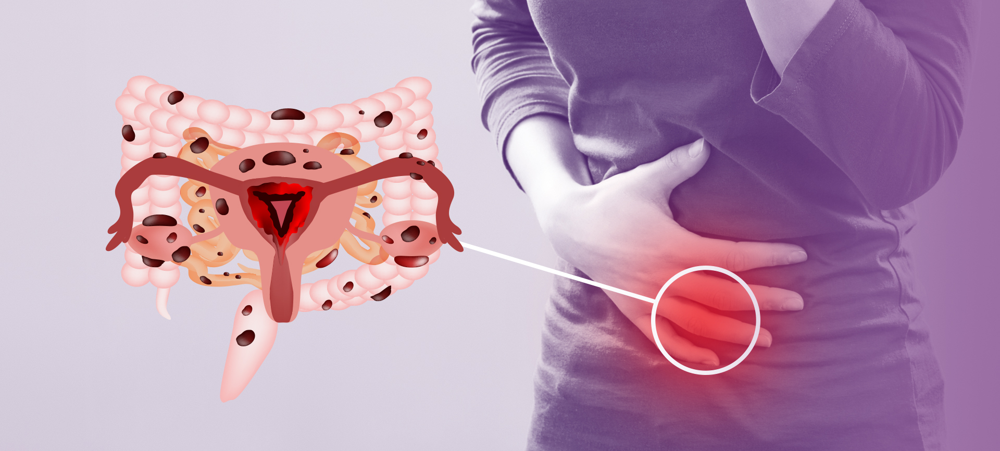

Hvad er endometriose?
Inde i kroppen har piger og kvinder noget, der hedder en livmoder. Det er et sted, hvor en baby kan vokse, hvis man en dag bliver gravid. Hver måned gør kroppen sig klar til, at det måske skal ske. Den laver en slags blød pude indeni livmoderen. Det kaldes livmoderslimhinden.
Hvis der ikke kommer en baby, bliver den bløde pude ikke brugt, og så kommer den ud som menstruation – det kalder man også for en “månedlig blødning”.
Men hos nogle piger og kvinder sker der noget mærkeligt. Den bløde pude begynder også at vokse udenfor livmoderen. Den kan sidde steder, hvor den ikke burde være – som på maven, tarmene eller æggestokkene. Det hedder endometriose.
Fordi den stadig prøver at gøre det samme som inde i livmoderen, kan det gøre rigtig ondt. Det kan føles som mavekramper eller stik, og nogle får også ondt i ryggen eller benene. Det kan være svært at gå i skole, dyrke sport eller bare have det godt.
Endometriose kan også gøre det svært at få børn, når man bliver voksen, men heldigvis findes der læger og medicin, som kan hjælpe. Det er vigtigt at tale om det, så man ikke går med smerter alene. For selvom man ikke kan se endometriose, er det noget, der findes – og man kan få hjælp.

What is Endometriosis?
Inside a girl’s or woman’s body is a place called the uterus, where a baby can grow. Each month, the body makes a soft, cushiony lining inside the uterus to get ready for a baby. If there's no baby, that lining leaves the body during a period.
But with endometriosis, this soft lining also grows outside the uterus, where it shouldn’t be—like on the stomach, ovaries, or other parts.
This can cause pain, especially during periods, because the lining outside the uterus has no way to leave the body. It can feel like strong cramps or stomach aches.
Endometriosis can make someone very tired and, later in life, it might make it harder to have a baby. But doctors can help with medicine and other treatments. Even though you can’t see it, endometriosis is real—and it’s okay to talk about it and ask for help.